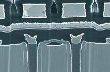

Focused Ion
Beam
Focused
Ion Beam (FIB) techniques are used in a variety of applications.
In terms of failure analysis, FIB techniques are commonly used in
high magnification
microscopy, die surface
milling or
cross-sectioning,
and even
material deposition.
A
FIB system works very similarly to a scanning electron microscope,
except that it uses a
finely focused beam of gallium (Ga+)
ions
instead
of the latter's use of electrons.
This focused primary beam of gallium ions is rastered on the
surface of the material to be analyzed.
As it hits the surface, a small amount of material is
sputtered,
or dislodged, from the surface.
|
|
|
Fig.
1.
Examples of
Focused Ion Beam (FIB) Stations
|
The
dislodged material may be in the form of secondary ions,
atoms, and
secondary
electrons. These
ions, atoms, and electrons are then collected and analyzed as signals to
form an image on a screen as the primary beams scans the surface.
This image forming capability allows high magnification
microscopy.
The
higher the primary beam current, the more material is sputtered from the
surface. If only high-mag
microscopy
is intended, only a
low-beam operation must be employed.
High-beam operation is used to sputter or remove material from
the surface, such as during high-precision milling or cross-sectioning
of an area on the die.

Fig.
2.
Cross-section
of a DRAM cell produced by FIB
A
FIB system can also bombard an area on the die with various
gases as it
performs primary beam sputtering. Depending on the gases used, these gases can react with the
primary beam to either
etch
material from or
deposit
material onto the surface.
See Also:
Failure
Analysis; All
FA Techniques;
Sectioning;
Die
Deprocessing;
SEM/TEM; FA Lab
Equipment; Basic FA
Flows;
Package Failures; Die
Failures
HOME
Copyright
© 2001-2005
www.EESemi.com.
All Rights Reserved.